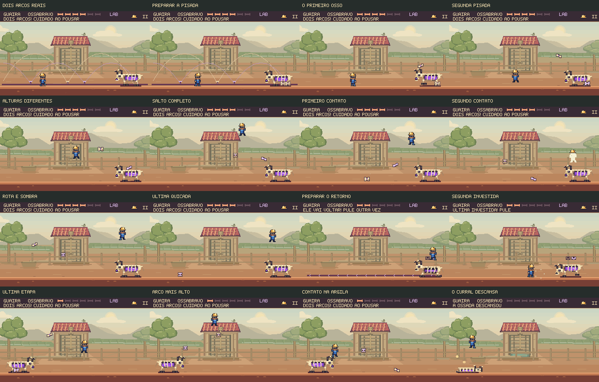

Dois arcos.
Outro ritmo.
Ossabravo lança um osso alto e prepara uma segunda pisada. O próximo projétil vem depois, mais baixo. É preciso escolher como atravessar e cuidar do lugar onde o Feka vai pousar.
Saltar com altura e intenção
Partida completa de 21,23 s, sem dano. Captura a 60 fps, sem áudio, com a movimentação e as colisões do jogo.
Altura que muda a esquiva. Na segunda etapa, os ossos sobem 64 e 44 pixels. Na última, 80 e 56. O salto completo do Feka sobe aproximadamente 100; soltar o botão antes altera a resposta ao ataque.
Duas ameaças separadas. O segundo osso sai 16 ou 18 quadros depois do primeiro. Tem trajetória, rotação e contato com o chão próprios. A abertura para atacar vem depois da dupla.
Da preparação ao contato com a argila

Os dois arcos aparecem antes do disparo. O primeiro osso tem tom de marfim; o segundo recebe um reflexo lilás, correspondente ao aviso. O movimento reduzido conserva as posições, alturas e sinais do ataque.
Passar por baixo também exige leitura
Quando o osso está alto, há espaço para cruzar pelo chão. O segundo lançamento e o corpo do chefe continuam ocupando a rota. Esta partida aproveita os ápices, salta depois da passagem e termina com um golpe descendente.
Partida completa de 21,57 s, sem dano. O corredor do curral permanece visível por inteiro na câmera normal.
Conferir o risco: o salto curto antigo é atingido
O mesmo comando que antes atravessava a dupla baixa agora encontra o primeiro osso durante a subida. O capacete é perdido aos 7,9 s. Esse trecho é um teste de falha, e não uma vitória.
Conferência no jogo
3.632 testes aprovados, incluindo 13 casos novos desta revisão. Compilação e validadores concluídos. As duas vitórias, o erro de salto e a recuperação de uma abertura perdida passaram com teclado e toque simulado. Dez pausas conservaram estado e imagem. A campanha normal passou com gamepad simulado, retorno ao mapa e progresso preservado após recarregar.
Resultados da revisão · Registro das três capturas
Os percursos gravados são ensaiados. Demonstram alternativas reais, risco e contra-ataques alcançáveis. A dificuldade para uma primeira partida ainda precisa de avaliação com jogadores sem conhecimento do padrão.